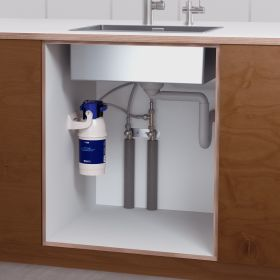

Under Sink Filter
BRITA mypure P1
BRITA mypure P1 Einbau-Filtersystem mit separater Filterarmatur und P1000-Kartusche.
Preis auf Anfrage
Technische Daten
| Produkttyp | Untertisch-Trinkwasserfilter |
| Filterkartusche | BRITA P1000 |
| Installation | Unter der Spüle |
| Ausgabe | Separate Filterarmatur |
| Reduktion | Kalkbildende Stoffe sowie geschmacks- und geruchsstörende Bestandteile laut Hersteller |
| Artikelnummer | 1025434 |
| Filterwechsel | Abhängig von Wasserhärte und Verbrauch |
| Strom | Nicht erforderlich |
Datenhinweis
Die Angaben stammen aus öffentlich zugänglichen Hersteller- und Produktunterlagen. Nicht veröffentlichte Werte wurden nicht geschätzt. Änderungen und Modellvarianten sind möglich.